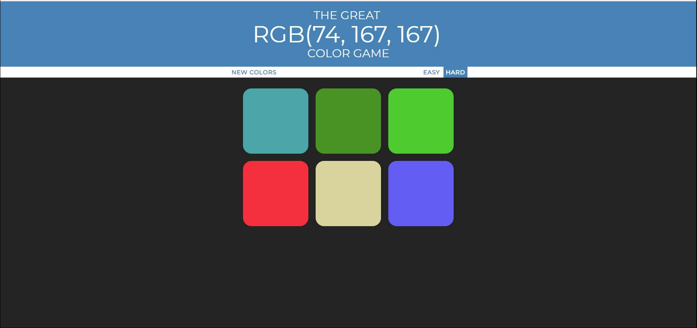

<div class="citation">"</div>
<div class="work-text">
<b>RBG-Game</b> Ett spel jag gjorde för att lära mig jQuery bättre, samt att manipulera DOM objekt. Spelet går ut på att gissa vilken färg RGB koden är i rubriken.
<a class="site-link" target="_blank" rel="noopener noreferrer" href="/4">Klicka här</a> för att se projektet i sin helhet.</div>